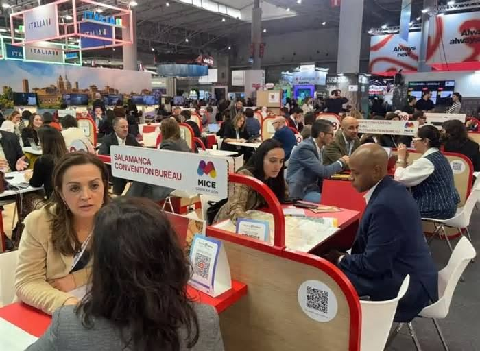

Castilla y León acude a IBTM World con más de cien reuniones profesionales

La Consejería de Cultura, Turismo y Deporte participa en Barcelona en IBTM World, dentro del espacio de Turespaña y junto a los Conventions Bureaux provinciales. La acción promociona la oferta MICE re ...
La Consejería de Cultura, Turismo y Deporte participa en Barcelona en IBTM World, dentro del espacio de Turespaña y junto a los Conventions Bureaux provinciales. La acción promociona la oferta MICE re ...
Noticia publicada por Merca2 on MSN. Consulta el artículo original en Merca2 on MSN para más información.